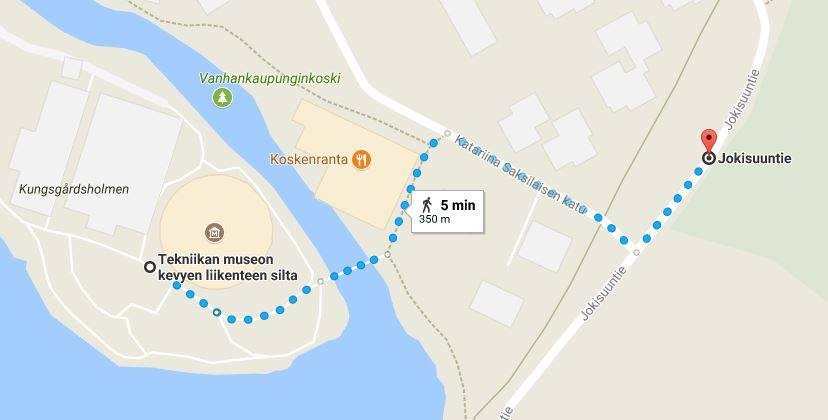

Vuorimieskilta on vuonna 1947 perustettu Aalto-yliopiston Kemian tekniikan korkeakoulun materiaalitekniikan opiskelijoiden yhdistys. Vuorimieskilta viettää tänä vuonna 70-vuotisjuhlavuottaan. Koko vuosi tulee olemaan täynnä upeita Vuorimieshenkisiä tapahtumia, ekskursioita, julkaisuja sekä tervehenkistä liikuntaa. Juhlavuosi ei ole tarkoitettu ainoastaan opiskelijoille vaan myös vanhemmille vuorimiehille.
Seuraa Vuorimieskiltaa vuoden aikana sosiaalisessa mediassa
#VK70 #vujukuntoon #vuorifilmaajat #otaniementeräsmiehet #sulametallionseksikästä #HotDarkDirty


Alla tietoa Vuosijuhlaviikosta sekä juhlavuoden huipentumasta Vuorimieskillan 70. Vuosijuhlasta.
19.11. Vuosijuhlaviikon avajaiset
Vuorimieskillan 70. juhlavuoden juhlaviikko lähtee käyntiin historian täytteisen museo-illan merkeissä sunnuntaina 19.11. klo 15 alkaen Polyteekkarimuseolla. Tapahtuman alussa on mahdollista nähdä ja kuulla museolle pystytetystä Vuorimieskillan juhlanäyttelystä, sekä nauttia tarjolla olevista pienistä herkuista. Ilta jatkuu muistelemalla menneitä aikoja ja kiltamme toimintaa vuosien varrelta.
https://www.facebook.com/events/1967473196863949/
21.11. Vuosijuhlaviikon lauluilta
Luvassa on niin tuttujen kuin tuntemattomampienkin kappaleiden laulamista. Vuosijuhlaviikon arvolle sopivasti tilaisuudessa on cocktail-pukukoodi ja tarjolla on myös laadukkaita virvokkeita. Saapukaa siis Vuosijuhlaviikon tiistaina sankoin joukoin paikalle nauttimaan vuorimiesseurasta, kovaäänisestä laulusta sekä juhlajuomista!
https://www.facebook.com/events/296940894133774/
22.11. Vuosijuhlaviikon excursio
Vuorimieskillan vuosijuhlaviikon excursiolla suunnataan Lappeenrantaan, missä vierailemme pumppuja ja venttiilejä valmistavalla Flowroxilla. Yritys tarjoaa lounaan ja illallisen! Mukaan mahtuu 30 innokkainta, mihin sisältyy 7-paikkainen prosessiteekkarien kiintiö.
Toivotamme kaikki juhlijat tervetulleiksi cocktail-tilaisuuteen Tekniikan Museolle (Viikintie 1, 00560 Helsinki) 24.11. klo 15.00 alkaen. Tilaisuudessa voit nauttia perinteistä Sikajuomaa sekä cocktail-paloja, tutustua juuri avattuun Tekniikan Maa -näyttelyyn, ja seurata lahjojenantoa. Tilaisuudesta on porrastettu bussikuljetus pääjuhlapaikalle. Ensimmäiset bussit lähtevät Jokisuuntien parkkipaikalta (kartta) klo 17.30 jälkeen.
Pukukoodi: Juhlapuku akateemisin kunniamerkein.
Juhla kajahtaa käyntiin klo 19.00, joten jos et osallistu cocktail-tilaisuuteen, saavuthan omatoimisesti paikalle hyvissä ajoin. Juhlaa vietetään Ravintola Wanhassa Satamassa. Sisäänkäynti sijaitsee osoitteessa Kanavakatu 5. Kultahuuhde tarjoillaan klo 18.00 alkaen ja voit sitä nauttiessasi tutustua pöytäkarttaan. Toivomme kaikkien noudattavan pöytäkarttaan merkittyjä jatkoille lähteviä pöytäkohtaisia busseja lähtöaikoineen.
Pukukoodi: Juhlapuku akateemisin kunniamerkein.
Juhlavuosi huipentuu hulppeaan Silliaamiaiseen lauantaina 25.11.2017!
Tartu hakkuusi ja kypärääsi saapuaksesi Otaonnelan sydämeen Servin Mökkiin louhimaan timantteja ja kultaa!
Kokoontukaamme siis luolamaiseen Smökkiin ehtymättömän sikislähteen äärelle nauttimaan hyvästä ruoasta, juomasta ja seurasta! Näissä puitteissa unohtuu edellisillan juhlien aiheuttama väsymys takuuvarmasti. Smökkiin saapuu myös Otaniemen menevin bilebändi pöh(i)nä viihdyttämään iloista juhlakansaa.
https://www.facebook.com/events/150196262245421/
Ilmoittautuminen juhlaan on sulkeutunut! Kaikki ilmoittautuneet näet täältä

Tässä julkaisemme tietoja juhlavuoden aikana järjestettävistä tapahtumista, ekskursioista ja liikuntamahdollisuuksista. Vuorimieskillan tulevia tapahtumia voit seurata myös killan virallisesta tapahtumakalenterista.
HCC on täällä taas! Osta lippusi täältä NYT ennen kuin ne loppuvat. Myymme lippuja myös Aalto Partyssä ja kiltahuoneella.
Vuorimieskillan perinteiset bileet Hard Cock Café tekee näyttävän paluun Vuorimieskillan 70-vuotisjuhlavuoden kunniaksi. Huhu kertoo, että HCC juontaa juurensa Smökkiin, jossa menovettä nautiskeltiin ison puusta veistetyn "kukon" ympärillä.
Suuntaa siis askeleesi itäiseen satamakaupunkiin Bar Looseen 15.9. Bileet alkavat kello 20.00 ja jatkuvat pilkkuun asti. Tietoa lipunmyynnistä seuraa lähempänä tapahtumaa.
HHC is back! The traditional party of The Guild of Materials and Metallurgy Students, Hard Cock Café, will make a flashy return to celebrate the 70th anniversary of the guild. Rumour has it that the roots of HCC are in Smökki, where refreshments were enjoyed by an enormous wooden rooster.
Make your way to the eastern harbour city and to Bar Loose on 15th of September. The party gets started at 20.00 and will continue until dawn. Info about ticket sale will follow closer to the date.
30.4 Vappulounas
Vappulounas keräsi ravintolan täydeltä juhlivaa vappukansaa. Kiitos kaikille osallistujille! Tämä juhla tekee vapusta juhlimisen arvoisen. Linkki Vappulounaan kuviin.
30.3 Kaljaviesti
Tärkeänä osana vujukuntoon pääsemisessä oli tietysti kaljaviesti. Fyysisesti raskas, intensiivinen ja hitusen alkoholilla maustettu kaljaviesti keräsi mukaansa niin vanhoja konkareita kuin uusia tulokkaita. Kisa oli jännittävä ja tasainen alusta loppuun. Kiitos kaikille osallistuneille!
10.3. Sikis-tasting
Sikis-tasting oli menestys ja pääsimmekin maistelemaan isäntien hedelmäisiä ja uniikkeja tuotoksia. Parhaan sikajuoman tittelin ansaitsi itselleen isäntä'00 Mika Natunen. Kiitos kaikille tapahtumaan osallistuneille ja varsinkin isännille keväisistä sikajuomista!
21.1. Juhlavuoden alkupamaus
Juhlavuosi polkaistiin käyntiin juhlavuoden alkupamauksella. Sitsihuuman ohessa käytiin lävitse juhlavuoden tapahtumia ja infoa tulevasta vuodesta.

Eikö vujumekko taaskaan mahtunut päälle? Kiristääkö frakki? Eikö ole uudenvuodenlupausta?
Ei hätää, Vuorimieskillan 70. Vuosijuhlissa nämä ongelmat on unohdettu. Juhlavuotena kiltalaiset nimittäin hiotaan huippukuntoon Vujukuntoon 2017 -ohjelmalla, jossa järjestetään kuukausittaisia lajikokeiluja uusien urheilumuotojen pariin, sekä pyritään viikottain järjestämään yhteistreenejä esimerkiksi lenkkien tai Unisportin ryhmäliikunnan muodossa. Kuukausittainen inspis-sähköposti pitää kiltalaiset ruodussa, ja muistuttaa tulevista urheilutapahtumista.
Jos haluat pysyä ajan tasalla, liity Vujukuntoon 2017 -Facebook-ryhmään.
20.9. Trampoliinipuistokokeilu klo 18-19:00 @Rush Pitäjänmäki (Sponsored by SSAB)
x.10. REllun HIIT klo x @ Otahallin Aava-sali
13.11. Kuntotesti part II klo 16:15-17:15 @ Otahallin Aava-sali
Kuntotesti, voimistelu, kahvakuula, InBody-mittaus, karate ja REllun HIIT, Nyrkkeily, Issikkaratsastus jne.
Vuorifilmaajat on Vuorimieskillan juhlavuoden kunniaksi perustettu kuvausryhmä, joka julkaisee kiltaamme liittyvää kuvamateriaalia pitkin vuotta.
VK70 juhlavuosi, Vuorimieshenki ja Kiltamme kulttuuri
Boliden - VK70 pääyhteistyökumppani
Vuorimiehet maailmalla
Koeporaus 2017
Vuosijuhlat 2017

Lähtemällä mukaan juhlavuotemme tukemiseen yrityksenne saa näkyvyyttä alamme nykyisten ja tulevien osaajien keskuudessa. Jos olet kiinnostunut lähtemään mukaan Vuorimieskillan juhlavuoteen, lisätietoja saat ottamalla yhteyttä vuosijuhlatoimikunnan yrityssuhdevastaaviin.
Villiina Ikäheimo
katri.ikaheimo@aalto.fi
Sini Anttila
sini.anttila@aalto.fi

Vuorimieskillan puheenjohtaja 2017
Waltteri Leskinen
waltteri.leskinen@aalto.fi
Historiikki
Maria Leikola
maria.leikola@aalto.fi
Juhlatoimikunnan koordinaattorit ja pääjuhlavastaavat
Ronja Ruismäki & Sanna-Mari Nevala
ronja.ruismaki@aalto.fi & sanna-mari.nevala@aalto.fi
Yrityssuhdevastaavat
Villiina Ikäheimo & Sini Anttila
katri.ikaheimo@aalto.fi & sini.anttila@aalto.fi
Grafiikka ja nettisivut
Jenina Noki
jenina.noki@aalto.fi
Markkinointi & Sillis
Maria Helle
maria.helle@tuky.fi
Vuorifilmaajat
Ted Nuorivaara
ted.nuorivaara@aalto.fi
Vujukuntoon
Elina Oksanen
elina.oksanen@aalto.fi
Lukkaritiimi
Heini Elomaa
heini.elomaa@aalto.fi
Hard Cock Café
Minna Rämä
minna.rama@aalto.fi
{kind=link}